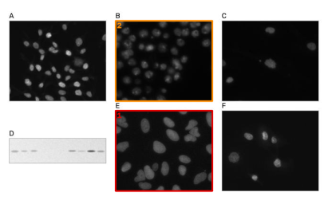
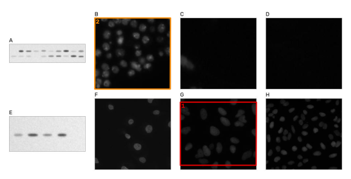
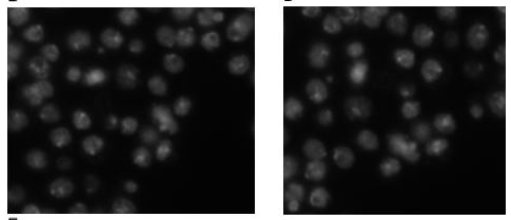
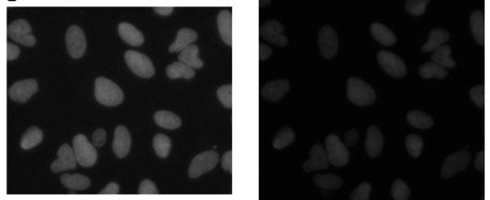
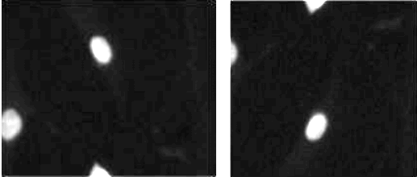
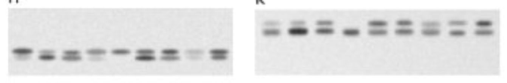
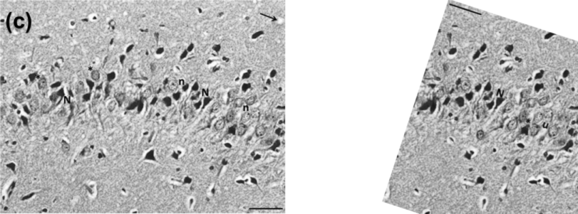

Finding reused images in scientific figures
A tool that checks a paper's figures for image panels that appear more than once, even when rotated, mirrored, resized, cropped or re-toned, and writes a report for a person to review. It was measured on synthetic papers with known answers, and run on real papers retracted for image problems.
Why this matters
Duplicated images are a common reason papers in biology and neuroscience are corrected or retracted. Some reuse is an honest mistake, some is deliberate, and a little is legitimate. Spotting it by eye means comparing every image panel with every other one, which nobody does reliably across a paper with dozens of panels. Software can do the comparing, and a person can do the judging.
How it works
- Split figures into panels. Labels are removed, then each figure is cut along its white gutters. A small trained classifier marks each panel as a photograph (microscopy, blots, gels) or a graphic (bars, fill patterns, plots, text, diagrams). Only photographs are compared.
- Compare every pair of image panels. Distinctive points are matched between the two panels (SIFT features). A geometric check keeps only matches that agree on one rotation, mirroring and resizing.
- Check the pixels. The second panel is warped onto the first, and the overlapping pixels are compared. Copies agree on fine grain and noise, not just on shapes. Two different cells that look alike do not.
- Report. Each finding shows the two regions side by side, labelled with what kind of reuse it looks like, for a person to judge.
What a report shows
A synthetic test paper with two planted reuses. The detector found both and nothing else.




How well it works on papers with known answers
Real manipulated papers do not come with an answer key, so the first test uses synthetic papers. Each one has 2 to 3 figures built from real microscopy images (the Data Science Bowl 2018 nuclei set and scikit-image samples), generated western blots and charts. Figures are saved as compressed JPEG, and half are shrunk, as happens in a real PDF. Some papers get planted reuse. Most also get look-alikes: two different regions of the same sample, which look similar but share no pixels. Those are the cases a careless detector flags.
Thresholds were chosen on 200 development papers, with a rule that at most 5% of clean papers may be flagged. Wrongly flagging an honest paper is the costly mistake. The numbers below are from 200 separate test papers that played no part in tuning. Of those, 70 have planted reuse between panels and 99 have no reuse at all. Another 14 ended up with a real duplicate the generator did not mean to make (two random crops of one image that overlap). They are scored apart from both groups, and the detector flagged 6 of them. The remaining 17 only have a region pasted within one panel, which the default search does not look for.
| Kind of reuse | Found | |
|---|---|---|
| Same western blot strip twice | 9 of 9 | |
| Same image, rotated or mirrored | 17 of 17 | |
| Same image in two panels | 16 of 20 | |
| Same image, brightness or contrast changed | 13 of 26 | |
| Two crops of one image that partly overlap | 3 of 8 |
Counts are small, so a few cases move each rate a lot. On the development papers the same thresholds found 57 of 84 and flagged 1 of 89 clean papers. The threshold search was widened once after an independent review, and its correlation floor is 0.5 because below that a reviewer cannot see the match. With a floor of 0.3 the search would pick 0.4, which finds 58 of 84 on the development papers and, on the test papers, 63 of 80 while flagging 2 of 99 clean papers.
Where it falls short
- Mostly dark images. All
22 missed reuses were microscopy panels in which at most
11.1% of pixels rose above the dark background. A field with a few nuclei
on black has little to match, and after JPEG compression the background is mostly noise.

A missed copy: the same image in two panels. Shown six times brighter than in the figure. - Small overlaps. Two crops that share a strip of their area are the hardest case (3 of 8 found).
- Blots with a similar layout. The one false alarm in the test was two different western
blots with a similar two-band layout, matched after turning one upside down and mirroring it
(pixel correlation 0.57). Blots are simple patterns, so a reviewer should look closely at
any blot finding with a modest score.

Two different blots, wrongly flagged. - Copies within one panel are not searched by default. The tool can look for a region pasted elsewhere in the same image, but on the benchmark it could not tell real pastes from natural repetition (similar nuclei, evenly spaced blot lanes). At its strictest it found 3 of 35 pastes and still flagged 5.1% of clean papers. At its loosest it found 21 of 35 and flagged 100%. It is available as an experimental option.
- Synthetic papers are not real papers. Real figures have insets, arrows, scale bars, composite colour images and stranger layouts. The retracted-paper check below is the test on real figures.
What real figures taught it
The first run on real papers went badly. Real figures are full of bar charts with hatched or checkered fills, text and line plots, and the hand-written rules that worked on the synthetic papers read many of these as photographs. Two hatched bars match each other perfectly, so one retracted paper made of bar charts produced 92 findings.
The fix was a small classifier (gradient-boosted trees on 20 simple image measurements), trained on 1106 panels from 60 retracted papers that I labelled by eye as photograph or graphic, plus synthetic panels. On a random sample of 768 of those panels, tested with whole papers held out, it keeps 96.9% of photographs and lets through 33 of 416 graphics. The old rules let through 234 of the same 416. The synthetic benchmark was rerun with a first version of the classifier: the test results did not change, and one false alarm on the development papers went away. Retraining it with more labels changed the decision for 3 panels across the 400 synthetic papers. Those papers were rerun, and the results did not change.
The bar-chart paper went from 92 findings to 1, and that one looks real: the right half of panel (c) of its figure 5 reappears inside panel (e), turned by about 162°. The "n" labels read as "u" and the scale bar sits at the top. The paper was retracted, with duplication and manipulation of images among the reasons given, so this is public record.

Papers retracted for image problems
The second test uses real papers. The Retraction Watch database lists 351 papers in neuroscience, neurology and psychiatry that were retracted with image problems among the reasons and that have a PubMed Central record. PubMed Central withholds the images of retracted articles, so their figures came from the publisher where that was possible (PLOS and Springer Nature). 204 papers had no reachable figures and others were skipped for the reasons listed in the summary file, leaving 79. For comparison, the same thresholds ran on up to one paper from the same journal and year for each of those, not marked as retracted, with figures from PubMed Central. 64 of those could be analysed. They are reported only as counts and are never named.
Many papers not marked as retracted have findings too, so a finding on its own says little about a paper. Some reuse is legitimate: a magnified inset, a merged fluorescence panel built from its own channels, a control image shown twice and declared in the legend. Higher score cut-offs flag fewer papers in both groups, and at 0.8 or 0.9 the gap between the groups is small enough to be chance at this sample size:
| Strongest finding scores | Retracted | Comparison |
|---|---|---|
| 0.5 or more | 52 of 79 (66%) | 24 of 64 (38%) |
| 0.7 or more | 34 of 79 (43%) | 15 of 64 (23%) |
| 0.8 or more | 20 of 79 (25%) | 11 of 64 (17%) |
| 0.9 or more | 12 of 79 (15%) | 5 of 64 (8%) |
| Papers with a finding of this kind | Retracted | Comparison |
|---|---|---|
| magnified region (often a legitimate inset) | 16 of 79 | 3 of 64 |
| overlapping fields of view | 18 of 79 | 1 of 64 |
| overlapping fields of view with rotation or mirroring | 10 of 79 | 4 of 64 |
| same image reused | 55 of 79 | 25 of 64 |
| same image, rotated or mirrored | 18 of 79 | 6 of 64 |
A retraction notice says a paper had an image problem, not where. Some problems are outside what this tool checks (a spliced blot, an image reused from another paper), so the share of retracted papers flagged is not a recall figure. 47 of the 79 analysed papers contributed panels to the classifier's training set, with photograph or graphic labels only, never with labels about reuse, and no comparison paper did. That likely removes more graphic false alarms in the retracted group than in the comparison group, so the gap between the groups is probably somewhat smaller than these numbers suggest. The two groups' figures also come from different places (publishers versus PubMed Central). The strongest finding of every retracted paper scoring 0.8 or more was checked by eye (20 papers). In 14 it looks like the same image used twice, and 6 are false alarms: text labels, a table, a plot and panel-splitting slips. One person did this, knowing the papers were retracted, and no comparison paper was looked at. Notes are in the table below. These are observations about papers already retracted, not new findings about anyone's work.
Blinded review
To take the reviewer's knowledge out of it, the strongest finding of every flagged paper, retracted and comparison alike, was shown to a second person as an unlabelled image pair, 87 pairs in shuffled order with nothing to say which group a pair came from. Telling legitimate reuse (an inset, a merged channel) from the rest was not reliable by eye, so the review measures whether the detector found the same pixels, not whether anything was wrong.
| Judged by eye, blind | Retracted | Comparison |
|---|---|---|
| Same pixels | 36 of 59 | 9 of 28 |
| Different images | 11 of 59 | 2 of 28 |
| Not a photograph | 9 of 59 | 16 of 28 |
| Can't tell | 3 of 59 | 1 of 28 |
The same pixels turned up in 61% of retracted papers' findings and 32% of comparison papers' (Fisher's exact test, p = 0.021). Most comparison findings were graphics the classifier let through, which fits the training bias described above. On the 20 top retracted findings, the blind judgements agreed with the unblinded check 18 times.
Retracted papers with findings (59)
Using it
pip install git+https://github.com/pearlfranz20/dupscope
dupscope scan fig1.png fig2.png fig3.png --out report/Open report/report.html. Every finding is a lead for a person to check, not a verdict.
Benchmark thresholds: at least 12 geometrically consistent matched points, pixel
correlation of at least 0.5, and at least 10% of a panel
overlapping. Code, benchmark generator and tests are on
GitHub.